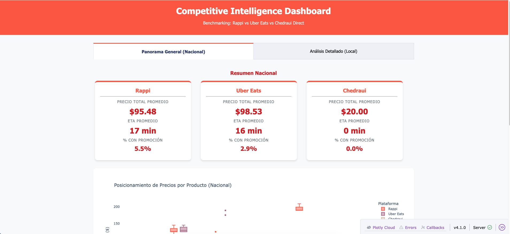
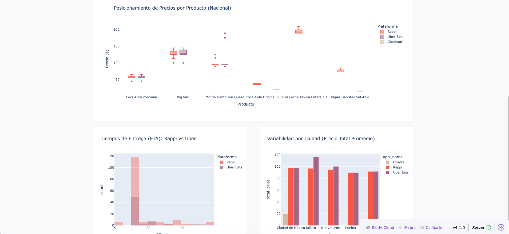
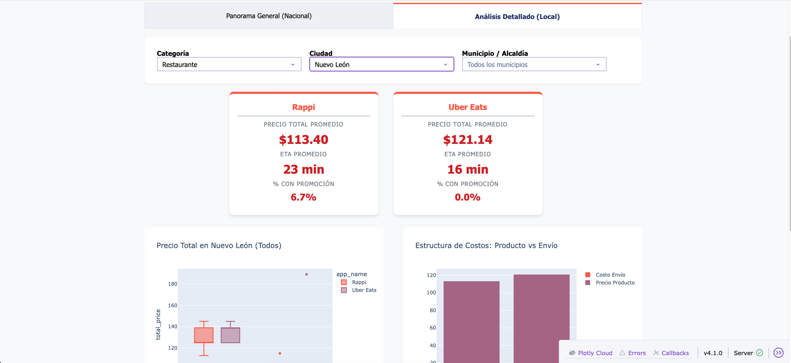

Panel de Inteligencia Competitiva de Rappi
Inteligencia competitiva automatizada para el mercado de delivery mexicano
Resumen
Un proyecto de evaluación técnica para Rappi enfocado en construir un sistema de inteligencia competitiva automatizado y resiliente para el mercado de delivery mexicano.
El sistema cuenta con scrapers web especializados para Rappi, Uber Eats y Chedraui, construidos con Playwright para manejar contenido dinámico y medidas anti-bot. Un panel de Plotly Dash visualiza métricas clave de rendimiento y posicionamiento competitivo.
Este proyecto demuestra experiencia en web scraping a escala, arquitectura de pipeline de datos y traducción de datos de mercado crudos en introspecciones competitivas estratégicas.
Características Clave
- Web Scraping Robusto: Scrapers basados en Playwright para Rappi, Uber Eats y Chedraui con rotación de proxy y técnicas de evasión anti-bot.
- Pipeline de Datos Automatizado: Scraping programado vía GitHub Actions con manejo de errores, validación de datos y almacenamiento en formato estructurado para análisis.
- Panel Interactivo: Una aplicación Plotly Dash provee visualizaciones de participación de mercado, tendencias de precios, tiempos de entrega y reseñas de clientes.
- Introspecciones Estratégicas: Análisis de posicionamiento competitivo, identificación de oportunidades de mercado y recomendaciones accionables basadas en los datos recogidos.
Tecnologías
Python
Plotly Dash
Playwright
Galería


